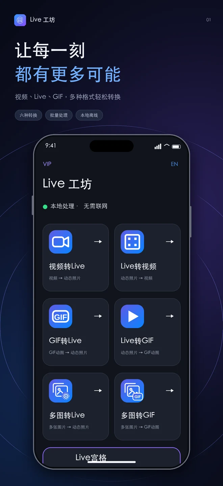
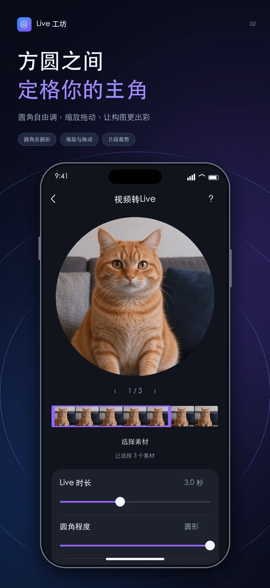
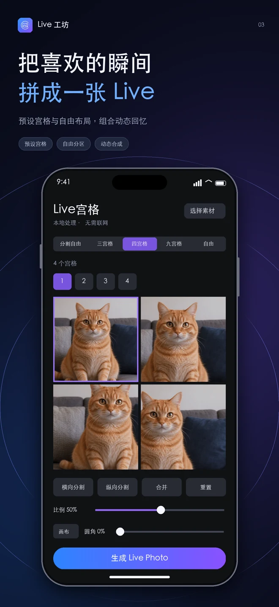

视频 → Live
把精彩片段，变成可长按播放的实况照片。
照片不止一帧，回忆不止一面。
在 Live 工坊，把照片、视频与 GIF
变成值得重温的动态作品。

从相册里的一张照片，到生活中的一段视频。
选择素材，调整设置，让灵感自然发生。
把精彩片段，变成可长按播放的实况照片。
将实况照片转换为视频，让播放与分享更方便。
把喜欢的动图，制作成相册里的动态瞬间。
将实况照片导出为 GIF，用动图表达心情。
把多张图片串成一段动态回忆。
按顺序播放照片，制作属于你的 GIF。
从画面构图到动态宫格，
让每一个细节，都更像你。
缩放、拖动画面，调整圆角和片段起点。选择时长、循环与输出质量，慢慢找到喜欢的效果。

组合多张 Live Photo，使用预设宫格或自由布局，把不同角度的回忆拼成一张动态作品。

以上为功能展示图。部分功能需购买 VIP，实际体验与输出效果以 App 为准。
VIP 提供批量转换、Live 宫格自由创作
和导入外部音频，让创作更灵活。
功能建议、使用问题，或者隐私咨询，都欢迎联系我们。
wt1377126991@163.com